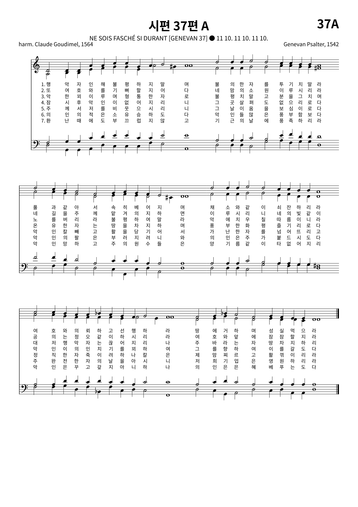

Psalm 37A
NE SOIS FASCHÉ SI DURANT [GENEVAN 37] · 11 10. 11 10. 11 10.
English title: Fret Not Yourself because of Evildoers
Tune: Genevan Psalter, 1542 · Harmony: Claude Goudimel, 1564 · Lyrics: Korean adaptation of Psalm 37 from the Korean Revised Version (AI draft adaptation · not yet theologically reviewed) · 7 stanzas
Psalm 37 is divided into 2 tunes: A B · This tune contains stanzas 1–7 of the Psalm 37 lyrics.
Score PDF MusicXML (for printing) MusicXML (for accompaniment, with prelude and repeats) Read Psalm 37 (Korean Revised Version)
Score
← Psalm 36 ListAccompaniment (in preparation)Psalm 37B →
Lyrics (Korean)
Stanza 1
행악자 인해 불평하지 말며
불의한 자를 투기치 말라
풀과 같아서 속히 베어지며
채소와 같이 쇠잔하리라
여호와 의뢰하고 선 행하라
땅에 거하며 성실 먹으라
행악자 인해 불평하지 말며
불의한 자를 투기치 말라
풀과 같아서 속히 베어지며
채소와 같이 쇠잔하리라
여호와 의뢰하고 선 행하라
땅에 거하며 성실 먹으라
Stanza 2
또 여호와를 기뻐할지어다
네 맘의 소원 이루시리라
네 길을 주께 맡겨 의지하면
이루시리니 네 의 빛같이
공의는 정오같이 하시리라
여호와 앞에 잠잠할지라
또 여호와를 기뻐할지어다
네 맘의 소원 이루시리라
네 길을 주께 맡겨 의지하면
이루시리니 네 의 빛같이
공의는 정오같이 하시리라
여호와 앞에 잠잠할지라
Stanza 3
악한 꾀 이루며 형통한 자로
불평치 말고 분을 그치며
노를 버리라 불평하여 말라
악에 치우칠 따름이니라
대저 행악자는 끊어지리나
주 바라는 자 땅 차지하리
악한 꾀 이루며 형통한 자로
불평치 말고 분을 그치며
노를 버리라 불평하여 말라
악에 치우칠 따름이니라
대저 행악자는 끊어지리나
주 바라는 자 땅 차지하리
Stanza 4
잠시 후 악인이 없어지리니
그곳 살펴도 없으리로다
온유한 자는 땅을 차지하며
풍부한 화평 즐기리로다
악인이 의인 치기를 꾀하여
그를 향하여 이를 갈도다
잠시 후 악인이 없어지리니
그곳 살펴도 없으리로다
온유한 자는 땅을 차지하며
풍부한 화평 즐기리로다
악인이 의인 치기를 꾀하여
그를 향하여 이를 갈도다
Stanza 5
주께서 저를 비웃으시리니
그 날이 옴을 보심이로다
악인 칼 빼고 활을 당기어서
가난한 자를 넘어뜨리고
정직한 자 죽이려 하나 칼은
제 맘 찌르고 활 꺾이리라
주께서 저를 비웃으시리니
그 날이 옴을 보심이로다
악인 칼 빼고 활을 당기어서
가난한 자를 넘어뜨리고
정직한 자 죽이려 하나 칼은
제 맘 찌르고 활 꺾이리라
Stanza 6
의인의 적은 소유 승하도다
악인들 많은 풍부함보다
악인의 팔은 부러지려니와
의인은 주가 붙드시도다
주 완전한 자의 날을 아시니
저희 기업은 영원하리라
의인의 적은 소유 승하도다
악인들 많은 풍부함보다
악인의 팔은 부러지려니와
의인은 주가 붙드시도다
주 완전한 자의 날을 아시니
저희 기업은 영원하리라
Stanza 7
환난 때에도 부끄럽지 않고
기근의 날에 풍족하리라
악인 망하고 주의 원수들은
양 기름 같이 타 없어지리
악인은 꾸고 갚지 아니하나
의인은 은혜 베푸는도다
환난 때에도 부끄럽지 않고
기근의 날에 풍족하리라
악인 망하고 주의 원수들은
양 기름 같이 타 없어지리
악인은 꾸고 갚지 아니하나
의인은 은혜 베푸는도다